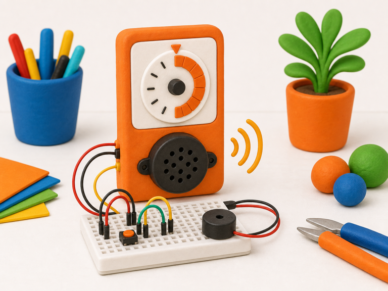
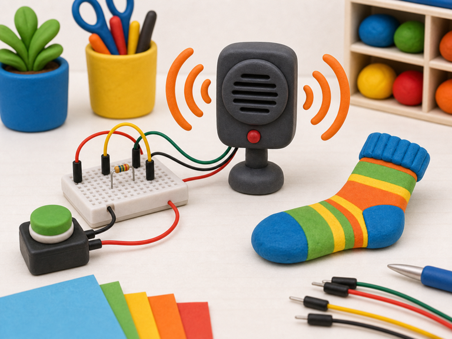

Countdown timer
DetectTimer reaches zero
->
DecideTime is up
->
DoBeep buzzer
A buzzer lets your project make a simple sound.
Some buzzers just turn on and off, while others can make different tones.
Your projects can use buzzers for alarms, timers, games, tiny celebrations, and noisy mistakes.


from gpiozero import Buzzer
buzzer = Buzzer(17)
buzzer.beep()from picozero import Buzzer
buzzer = Buzzer(2)
buzzer.beep()buzzer.on(), buzzer.off(), or buzzer.beep() after a Detect brick spots something.